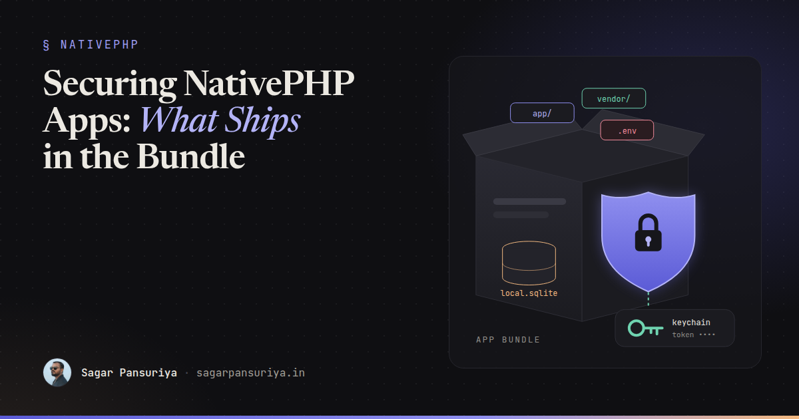
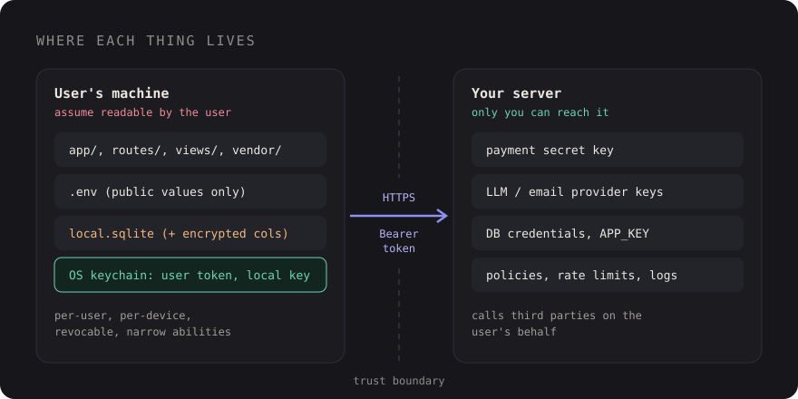

Securing NativePHP Apps: What Ships in the Bundle and What Never Should


You've probably built a Laravel app where the most sensitive file in the project is
.env. It holds the database password, the Stripe secret, the mail credentials,
and it lives on a server that only you and your deploy pipeline can reach. That mental model
has served web developers well for years.
NativePHP breaks it. When you build a desktop or mobile app with NativePHP, your Laravel app stops living on your server and starts living on your users' machines. Every install is a copy of your code, running on hardware you don't control, owned by someone who can open the app folder and poke around. That's not a flaw in NativePHP. It's the nature of any client-side app, and Electron, Tauri and native mobile developers have been dealing with it for a long time. Laravel developers just aren't used to it yet.
This post walks through what actually ends up in the bundle, where secrets have to live instead, and how to protect tokens, local data and the update channel. I'll keep the NativePHP-specific APIs general on purpose, because they move quickly. The principles don't.
What actually ships inside the app
A NativePHP build packages a PHP runtime together with your Laravel application. That means
your app/ directory, your routes, your views, your config files, your
vendor/ folder and a copy of your environment file all end up inside the app
bundle on disk. On macOS that's inside the .app package, on Windows it's in the
install directory, and on mobile it's inside the app package.
PHP is not compiled to machine code here. Your source is readable. Someone with a few minutes and a file browser can open your controllers and read them. Obfuscation tools exist, but treat them as a speed bump, not a lock. The only safe assumption is:
Anything inside the bundle is public. If you wouldn't paste it into a public GitHub repo, it doesn't belong in the app.
The .env problem
The environment file is where this bites hardest. Your local .env is full of
things that make sense on a developer machine: AWS keys for the S3 bucket, a GitHub token for
private packages, credentials for the production database you connected to "just once" while
debugging. If the build picks up that file, every user gets them.
NativePHP's config file lets you list environment keys to strip from the bundled environment
at build time, and lets you exclude files and folders from the build. Open
config/nativephp.php, read what's there, and extend both lists. But don't rely on a
deny list alone. The safer habit is a dedicated, minimal environment for builds:
# .env used for release builds: nothing here is secret
APP_NAME="Field Notes"
APP_ENV=production
APP_DEBUG=false
API_BASE_URL=https://api.fieldnotes.app
LOG_LEVEL=warningIf a value in that file would hurt you when it leaks, it shouldn't be in that file. Also make
sure APP_DEBUG is false. A debug error page inside a desktop app shows the same
stack traces, paths and environment details it would on a website, just to a more curious
audience.
Secrets meant for servers stay on servers
The most common mistake I see in client-side apps of any kind is calling a third-party API directly with a key that was meant to stay private. A payment provider's secret key, an LLM provider's API key, an email service key, admin credentials for your own backend. If the app can read it, the user can read it, and so can anyone who downloads your installer.
The fix is architectural, not clever. Your app talks to your API. Your API holds the real secrets and talks to the third parties on the user's behalf:

That server-side hop is also where you get to enforce things the app can't: rate limits per user, plan checks, usage caps, audit logs. A leaked per-user token is a problem for one account. A leaked provider key is a problem for your whole bill.
Per-user tokens against your API
If the app shouldn't hold shared secrets, how does it authenticate? The same way a mobile app would: the user signs in, your API issues a token scoped to that user and that device, and the app sends it with every request. Laravel Sanctum's personal access tokens fit this well:
// routes/api.php, on your server
Route::post('/device-login', function (Request $request) {
$request->validate([
'email' => ['required', 'email'],
'password' => ['required'],
'device_name' => ['required', 'string', 'max:100'],
]);
$user = User::where('email', $request->email)->first();
if (! $user || ! Hash::check($request->password, $user->password)) {
throw ValidationException::withMessages([
'email' => ['These credentials do not match our records.'],
]);
}
$token = $user->createToken(
'desktop: '.$request->device_name,
['notes:read', 'notes:write'], // only what the app needs
now()->addDays(90), // tokens should expire
);
return ['token' => $token->plainTextToken];
})->middleware('throttle:5,1');A few rules that make this setup hold up:
- Name tokens after the device. Then you can show users a "signed-in devices" list and let them revoke a lost laptop.
- Scope abilities narrowly. A desktop client rarely needs admin abilities, even for admin users. Put admin work in the web app.
- Expire and rotate. Long-lived tokens are convenient until one leaks. An expiry plus a silent re-auth flow is a good middle ground.
- Revoke on sign-out. Delete the token on the server, not just the local copy.
- Never trust the client's authorization logic. Hiding a button in the app is UX. The policy check on the server is security.
Storing secrets on the device
The token has to live somewhere on the user's machine. The worst place is a plain text settings file or an unencrypted column in the local database, because any process running as that user, and any backup tool, can read it.
Every major operating system ships a credential store built for exactly this: Keychain on macOS and iOS, Credential Manager and DPAPI on Windows, the Secret Service (libsecret) on most Linux desktops, and Keystore on Android. They tie secrets to the user account, and on some platforms to the app's signing identity, so other apps can't simply read them. NativePHP exposes secure storage on its platforms, but the exact API differs between desktop and mobile and has changed between versions, so check the current docs at nativephp.com for the platform you're targeting.
Whatever the API, the shape is the same: store the token in the OS store, read it when you build the HTTP client, delete it on sign-out.
Laravel encryption for local data
For larger sensitive data you want in SQLite (cached messages, notes, customer details),
Laravel's encryption is useful, with one catch. Crypt and the
encrypted casts use APP_KEY. If that key ships in the bundle, it's
identical on every install and readable by anyone. Encrypting with it is obfuscation.
The better pattern: generate a random key per install on first launch, keep it in the OS credential store, and build an encrypter from it.
use Illuminate\Database\Eloquent\Model;
use Illuminate\Encryption\Encrypter;
// In a service provider's boot() method
$key = app(DeviceSecrets::class)->get('local_data_key'); // your wrapper around secure storage
if (! $key) {
$key = base64_encode(Encrypter::generateKey('AES-256-CBC'));
app(DeviceSecrets::class)->put('local_data_key', $key);
}
$encrypter = new Encrypter(base64_decode($key), 'AES-256-CBC');
// Make the `encrypted` casts on local models use the per-install key
Model::encryptUsing($encrypter);DeviceSecrets here is a small class of your own that wraps whatever secure storage
API your NativePHP version provides. Keeping that wrapper thin means one place to change when
the platform API changes.
Protecting the local SQLite file
NativePHP apps typically keep their database as a SQLite file in the app's data directory. Stock SQLite doesn't encrypt anything: open the file with any SQLite browser and the tables are right there. Encrypted SQLite builds such as SQLCipher exist, but they require a custom SQLite build and PHP extension, which is a lot to take on for most apps.
For most apps, a layered approach is enough:
- Store less. The safest data is data you never cache. Does the app really need a full customer list offline, or just the records the user opened?
- Encrypt the sensitive columns with the per-install encrypter above. Leave non-sensitive columns plain so you can still query and index them.
- Keep the file in the app's data directory, which the OS already protects with user account permissions. Never write it to a shared or synced folder.
- Wipe on sign-out. Delete the user's local data and the local key when they sign out, especially on shared machines.
Be honest with yourself about the threat model. Nothing on the device protects data from someone who has full control of the user's unlocked account. What you're protecting against is casual snooping, other apps, careless backups and stolen disks. That's still worth doing.
The webview is still a browser
Your UI renders in a webview, so the usual web rules apply, with higher stakes. An XSS hole in a website steals a session. An XSS hole in a desktop app can reach whatever native functionality your app exposes to its frontend.
- Keep using
{{ }}, and treat every{!! !!}as a code review question. Content synced from your API is still untrusted input. - Open external links in the user's default browser, not inside your app window.
- Don't load remote scripts from CDNs into the app. Bundle your assets with Vite.
- Don't assume anything listening on
localhostis only reachable by your own app. Other software on the machine can make local requests too.
Update channel integrity
Auto-updates are the most powerful thing your app does: they replace your code on every user's machine without anyone reviewing it. If an attacker can publish to your update channel, they own your install base. I covered the release mechanics in shipping NativePHP desktop apps, so here's the security angle only:
- Sign every build. Code signing on macOS and Windows is what lets the OS and the updater verify an update came from you and wasn't modified.
- Serve update metadata over HTTPS only, from a location only your release pipeline can write to.
- Guard the publishing credentials. Signing certificates and update provider tokens belong in your CI secret store, scoped to the release job, never in the repo or on a laptop that also runs random npm installs.
- Protect the release branch. Require review before anything that triggers a release can merge.
A security checklist for NativePHP apps
- Assume everything in the bundle is public, including your source.
- Build with a minimal release environment file, and extend NativePHP's env cleanup and exclude lists.
APP_DEBUG=falsein every release build.- No third-party or server secrets in the app. Proxy those calls through your API.
- Per-user, per-device tokens with narrow abilities, expiry and server-side revocation.
- Tokens and local keys in the OS credential store, never in plain files.
- Sensitive local columns encrypted with a per-install key, not the shipped
APP_KEY. - Cache only what the app needs offline, and wipe it on sign-out.
- Escape output, open external links outside the app, bundle your assets.
- Signed builds, HTTPS update feed, and release credentials locked inside CI.
None of this is exotic. It's the same discipline mobile developers have followed for years, applied to a stack that used to live safely behind a server. Once you stop thinking of the app as "my Laravel project" and start thinking of it as "a copy of my code on a stranger's laptop", most of the right decisions make themselves.
Discussion